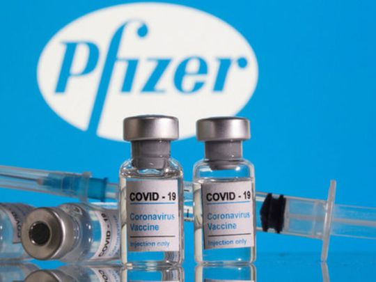
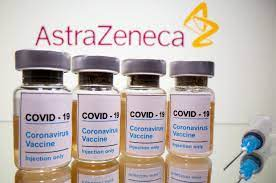

Todo lo que quiera saber sobre las vacunas de Costa Rica, marcas, dosis asi como estaditicas de este y otros paises
|  |
En la vacuna Pfizer se aplican dos dosis por persona en la cual la diferencia es de la rededor de 3 meses una de la otra, la dosis se aplica en personas mayores a los 16 años. No se recomienda en personas embarazadas , ni en niños menores de 16. Sengun la CCSS cada frasco de la vacuna Pfizer sirven para 6 dosis como maximo. |
|  |
La vacuna AstraZeneca se aplican de igual dos dosis en un intervalo de 8 a 12 semanas la dosis se aplican a personas mayores, de 18 años, no se recomienda el uso de esta vacuna en personas con embarazos de alto riesgo, o menores de 18 años. Segun la CCSS cada frasco de esta vacuna AstraZeneca sirven para hasta 10 dosis. |
| bandera | Pais | Cantidad de vacunados | porcentaje de vacunados | Link de sitio Oficial |
|---|---|---|---|---|
|
|
Costa Rica | 4.87M | 34.2% | Mas Informacion |
|
|
Estados Unidos | 386M | 55.4% | Mas Informacion |
|
|
Brasil | 222M | 38.2% | Mas Informacion |
| Colombia | 38.5M | 32% | Mas Informacion |